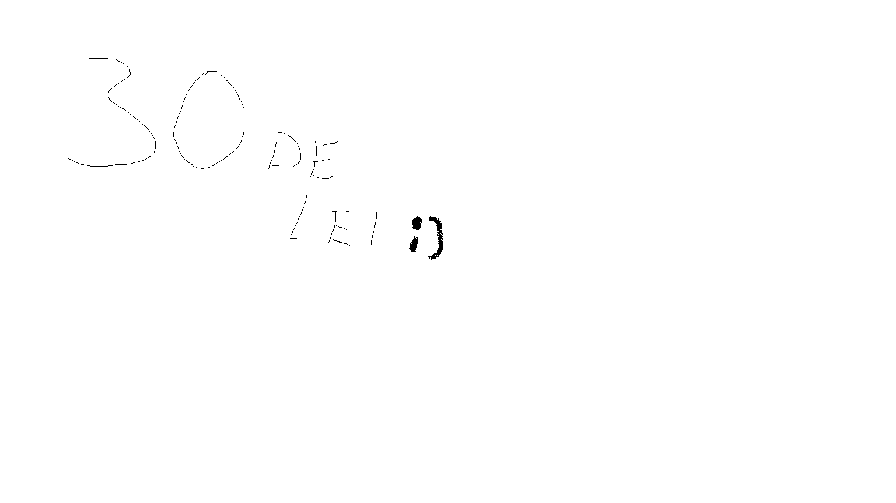

- Concluzii generale – Datele colectate confirmă că utilizarea excesivă a rețelelor sociale are un impact negativ semnificativ asupra sănătății mintale și a performanței școlare a adolescenților. Anxietatea, scăderea stimei de sine, tulburările de somn și dificultățile de concentrare sunt efecte frecvent raportate de tinerii chestionați. Totodată, rețelele sociale pot facilita comunicarea și accesul la informație, dacă sunt utilizate echilibrat și conștient.
- Recomandări pentru adolescenți – Stabilirea unor limite clare de timp pentru utilizarea rețelelor sociale (ex. maximum 2 ore pe zi), activarea modului „Nu deranja" în timpul orelor de studiu, urmărirea selectivă a conținutului pozitiv și educativ, și cultivarea relațiilor față în față ca alternativă la interacțiunea online.
- Recomandări pentru părinți și școală – Implicarea activă a părinților în educația digitală a copiilor, organizarea de ore de educație media în școli, încurajarea activităților extracurriculare offline și crearea unui dialog deschis despre riscurile și beneficiile lumii digitale sunt pași esențiali pentru un echilibru sănătos.
